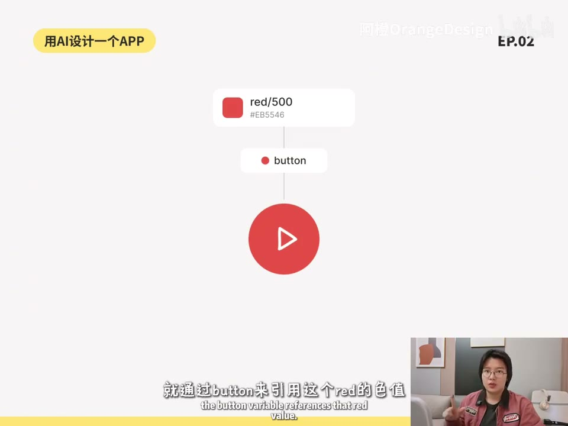

原视频 · 在线回看
点击后联网加载 B 站播放器；本地不下载整段视频。

原视频 · 在线回看
点击后联网加载 B 站播放器；本地不下载整段视频。
来源：用AI做设计🧑🎨设计系统篇EP.02
UP 主：阿橙OrangeDesign｜时长：00:04:46｜阅读强度：standard
链接：https://www.bilibili.com/video/BV1E6Jf6UEUc/
我们用 AI 画出一个满意的页面，继续画第二个、第三个，按钮、字号和间距却开始各长各的。第一张图本身没有变差，问题出在后面的页面没有共同遵循的规则：每次生成，都像重新决定一次什么颜色、什么尺寸才合适。要让番茄钟应用继续扩展，可以先回到 Figma 里已经认可的页面，把反复使用的选择整理出来，再让后面的页面引用这些选择。这就是这次设计系统整理的起点。
这里的工作围绕番茄钟现有视觉展开：先检查颜色、文字与间距，再整理变量、组件和自动布局，最后延展页面并验证。设计系统把“这张图看起来怎样”变成“其他页面怎样继续遵循同一套规则”。规则的规模应与应用相称，小番茄钟和页面、状态更多的记账应用，需要的细分程度可以不同。先让规则足够清楚、能够修改，后续才有机会持续使用。
让 AI 先列出现有界面用到的颜色、字体、字号、间距、圆角和阴影，暂时别把每个数值都存一遍。这个顺序很有用：只有先看清现状，才知道哪些选择反复出现，哪些可能只是一处特殊处理。如果一看到数值就建变量，很容易把尚未整理的差异原样保存，变量虽然多了，各页面依然没有形成清楚的共同约定。
接着，把经常使用的颜色、间距和圆角整理成变量。变量可以理解为有名字、可以被多处引用的值：页面使用这个名字，对应的数值在统一位置维护。需要变化时，不必逐一寻找各处散写的值。不过，仅仅给一个颜色起名，还没有说清什么时候应该一起变化；要处理这个问题，就需要进一步区分颜色本身和颜色承担的用途。
番茄红可以在基础层保存成一个色值，例子里叫 red/500；开始按钮不直接绑定“红色”这个意思，通过 button 这个用途名称引用它。番茄图形使用 tomato，删除按钮则使用 delete。三个用途当前可以都指向同一个红色，但它们分别代表操作按钮、番茄形象与删除动作，未来不一定要共同变化。记录用途的这一层称为语义层，名字帮助我们看出这个值服务于什么对象。
假如以后只想把主操作按钮改为绿色，就调整 button 所引用的颜色，tomato 和 delete 仍引用原来的红色。这样修改范围与设计意图相符：我们改的是主按钮的角色，番茄和删除按钮没有被连带改色。如果所有红色元素都只引用一个基础红色，然后把这个基础值改绿，所有关联元素就可能一起变化，无法表达这次只改主按钮的要求。基础层与用途层的区别，正是在这种具体修改里体现出来。
| 变量层次或用途 | 当前关系 | 只改主按钮为绿色时 |
|---|---|---|
| red/500 | 保存基础红色色值 | 保持原值 |
| button | 引用主按钮要用的颜色 | 改为引用绿色 |
| tomato | 引用番茄图形要用的颜色 | 继续引用红色 |
| delete | 引用删除操作要用的颜色 | 继续引用红色 |
间距、圆角也可以按用途命名，但番茄钟足够简单，可以先使用按数值组织的变量，避免为少量值建立太多层。文字则把字体、字号、行高组合成文字样式，阴影放到效果样式中管理。它们各自集中的是一类反复使用的视觉选择，让使用者可以直接选用一套已约定的规则。这里没有要求所有类型都套相同结构，整理方式应帮助实际查找和调整。
阿橙遇到过相反的问题：只有一个页面，AI 却整理出非常复杂的设计系统。想手动调整一个按钮时，面对许多变量，反而不知道选哪个。此时继续增加规范并不能解决困难，需要重新对话，收拢绕口的名称和过碎的分组。设计系统要让人知道一个修改应该去哪里做，数量多或层次深本身无法证明整理得好。
页面和状态变多时，用途可能确实要分得更细，例如小满账本就需要更丰富的组织。简单项目保留足够少的选择，复杂项目补充真正需要区分的用途，这两种做法可以并存。后续还要定期整理，因为新增功能可能带来重复变量、模糊名称或新的状态。让规则与现有页面一起生长，比一开始为所有未来情况设想大量变量更容易管理。
变量整理好了，再看重复出现的结构：按钮、设置行、声音选项，都可能值得做成组件。以开始按钮为例，把它的结构和样式整理成主组件，页面放置的是引用主组件的实例。需要统一调整时，修改主组件，相关实例随之更新。变量控制共用的值，组件进一步控制一组元素怎样组成一个可复用对象；两者承担的工作不同。
按钮还会有默认、按下、禁用等状态，可以把这些视觉整理为组件变体。声音选项则要区分选中与未选中。状态明确以后，后面做页面时就能选到相应表现，避免每处临时画一个看似相同、细节却不同的按钮。不过，两样东西长得相似，并不足以决定它们属于同一组件；还要看用途、结构和变化方式是否适合共同遵循一套规则。把不相干的对象硬塞进一个组件，也可能增加使用难度。
统一颜色与结构之后，还要处理尺寸变化。按钮文字变长，是让按钮跟着变宽，还是让文字换行？页面变宽，设置行是否一起伸展？固定一张图时，这些问题可能没有暴露；继续改文案或适配不同宽度，原来的摆放就需要有明确行为。自动布局把元素的排列、间距和尺寸关系记录下来，让内容变化时仍按约定排布。
开启自动布局并绑定间距变量以后，逐项确认宽高是固定、随内容变化，还是填满容器。这三种选择对应不同意图：固定尺寸保持元素大小；跟随内容让容纳空间随内容调整；填满容器则使用父级给出的空间。番茄钟主页采用简单的垂直自动布局，再设定好间距。布局规则无需复杂，但必须说明当文字、内容或外部空间改变时，谁跟着变、谁保持不变。
延展页面时，先让 AI 查找已有变量和组件，能用就直接引用；确实缺少的部分，再按原有规则补充，并把补充项实际用回新页面。这一步防止新增页面又回到各自决定颜色和结构的状态。新增组件与变量的目的，是填补现有规则无法表达的真实需要，先检查已有内容，就能减少同义项重复出现。
完成后，用几次小修改检查关系是否成立。把主按钮改色，看看该变化的实例是否都更新，不该变化的番茄或删除操作是否保持原样；再拉长文字、改变页面宽度，看排版是否被破坏。前一种检查引用范围，后一种检查尺寸与排列行为，合起来才能知道规则是否真正连到各页面。至此完成的是视觉规则与页面延展，交互原型和上手机体验属于后续工作，仍需要再实际点击和使用。
设计系统把一个满意页面里的共用选择转成可引用、可调整的规则。变量管理值及用途，组件管理重复结构和状态，自动布局管理内容与空间改变后的排列。最后用改颜色、改文字长度和改页面宽度来验证：该变的地方一起变，不该变的地方保持原样，页面也继续能读懂。